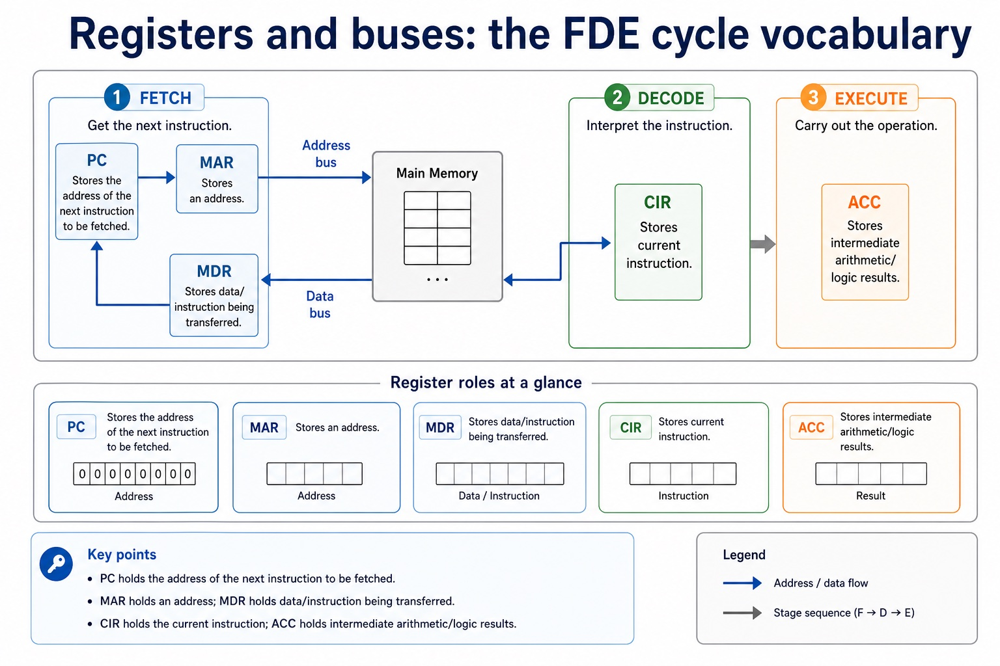

The fetch-execute cycle using register transfer notation
S4.07.A01S4.07.A02
Visual overview
Registers and buses: the FDE cycle vocabulary

Visual transcript
- Processor review
- PC Stores the address of the next instruction to be fetched.
- MAR / MDR MAR stores an address; MDR stores data/instruction being transferred.
- CIR / ACC CIR stores current instruction; ACC stores intermediate arithmetic/logic results.
Core explanation
The fetch-execute cycle using register transfer notation.
Register-transfer notation describes a data transfer or register update. The arrow <- means 'is loaded with' or 'receives'; it is not an equality sign. Memory[MAR] means the contents of the memory location whose address is currently held in MAR.
The exact timing of PC increment may vary between coherent processor descriptions, but MAR must receive the current instruction address before that address is replaced. Register-transfer notation describes movement and updates; it does not imply that two registers permanently contain the same value.